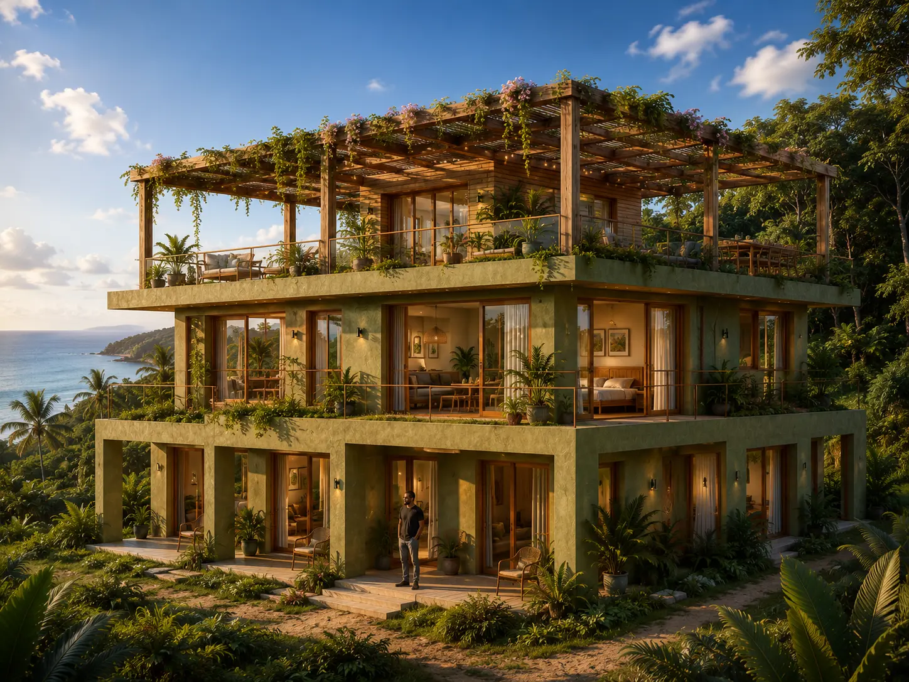
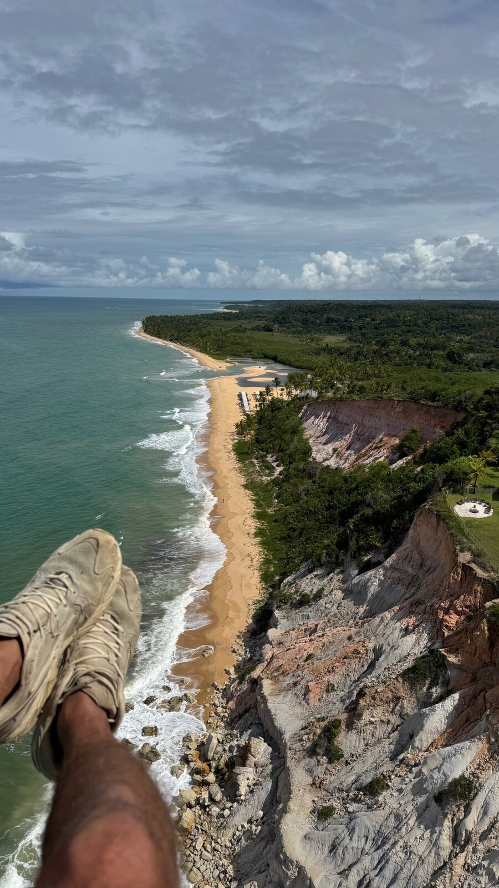
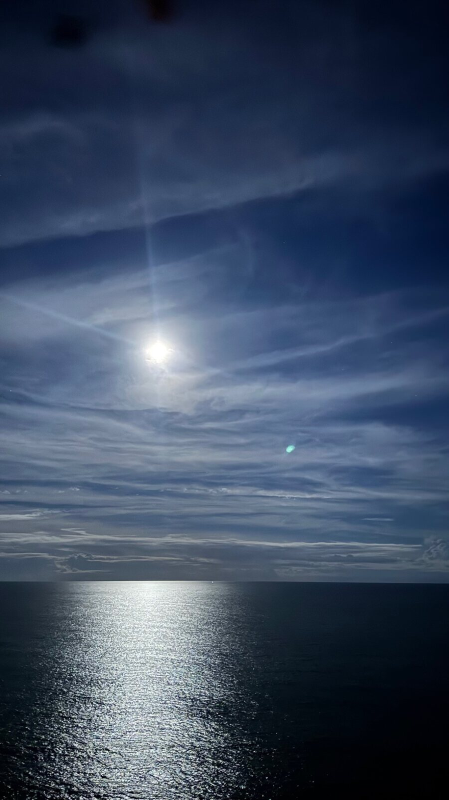
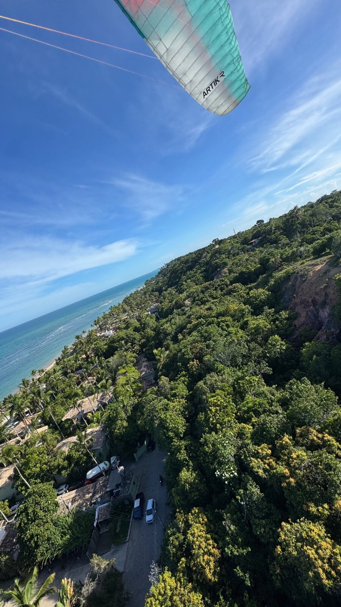
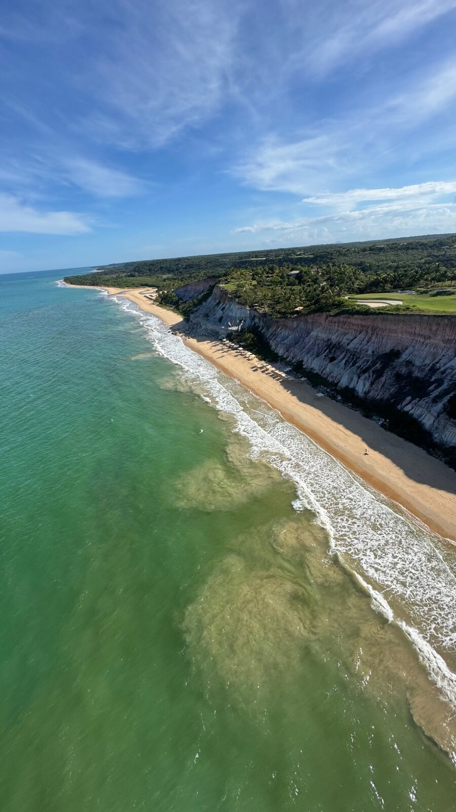
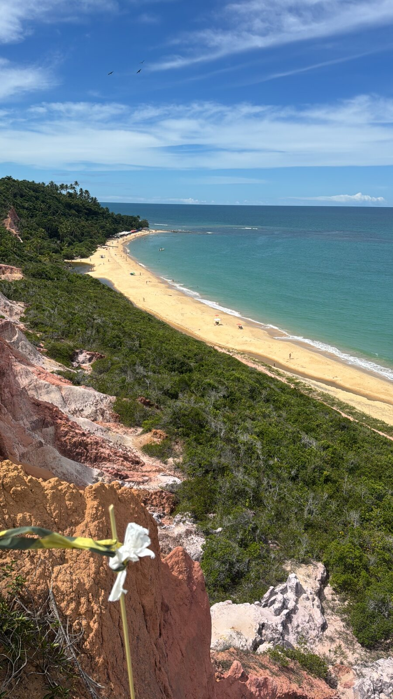
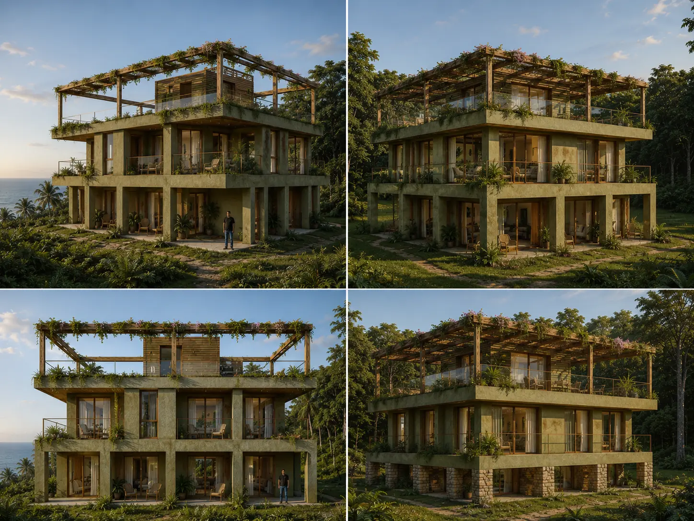

Destinos de voo
Condições excelentes, mas frequentemente com hospedagem fraca, logística difícil, pouco serviço para a família e organização imprevisível.
Sul da Bahia · Brasil
Filosofia da liberdade
Boutique hotel e destination flight club entre a Mata Atlântica, a falésia e o oceano.
Conheça o projeto ↓A essência
O piloto acorda, sai da hospedagem com a asa e decola praticamente de casa.
A família e os amigos vivem uma experiência completa à beira-mar: natureza, silêncio, arquitetura, gastronomia e serviço de alto nível.

Visualização arquitetônica preliminar
A oportunidade
Condições excelentes, mas frequentemente com hospedagem fraca, logística difícil, pouco serviço para a família e organização imprevisível.
Conforto e serviço consistentes, mas quase nunca com decolagem própria, infraestrutura para asas, rotas verificadas e comunidade internacional.
A Voosada une os dois mundos em um só endereço.

Destination flight club
O lugar é o produto
No sul da Bahia, o planalto verde da Mata Atlântica encontra o oceano. A brisa sobe da água e transforma a falésia numa mão aberta que sustenta a asa.

Uma experiência completa



Sem concessões
A viagem deixa de exigir um compromisso dentro da família.
Suficiência inteligente

Volume amplo e horizontal, enraizado na paisagem.
Módulos repetíveis no lugar de complexidade cara.
Vidro panorâmico apenas onde cria valor real.
Materiais locais, reboco quente, madeira e concreto.
Cobertura aberta com pérgola, preservando céu e vento.
Programa principal
Quatro blocos de canto, dois apartamentos em cada um, com acesso próximo à natureza.
Unidades premium com vistas para o oceano e para a copa da Mata Atlântica.
Pérgola, café da manhã, bar, yoga, encontros, telescópio e céu aberto.
Primeira etapa
8
Módulos de glamping premium: plataforma de madeira, cama de alta qualidade, banheiro privativo, pequena varanda e contato direto com a mata.
Construção leve e modular com implantação mais rápida.
O projeto começa a operar enquanto o edifício principal é desenvolvido.
Tarifas, ocupação e perfil do hóspede passam a ser dados reais.
A Voosada nasce como experiência antes de alcançar sua escala final.
Escala final
Recepção, cozinha, bar, manutenção, reservas, marketing e serviço compartilhados por todo o conjunto.
Modelo de receita
20 unidades em formatos e faixas de preço diferentes.
Café da manhã, bar ao entardecer e gastronomia intimista.
Membership, transfers, acompanhamento, cursos e voos duplos.
Wellness, palestras, encontros, filmagens e marcas parceiras.
Hipótese de trabalho: os serviços complementares podem acrescentar 15–25% à receita de hospedagem.
Cenário conservador
R$ 350 · ocupação 52%
R$ 531 milR$ 700 · ocupação 52%
R$ 531 milR$ 300 · ocupação 50%
R$ 438 milCenário preliminar. Não inclui impostos, comissões de OTAs, folha de pagamento, custos de A&B, manutenção, seguros ou financiamento.
Contexto de mercado
Porto Seguro é um destino turístico maduro, com grande oferta de hospedagem e ocupação elevada nos períodos mais fortes.
Fontes: Prefeitura de Porto Seguro. Os picos do destino não são uma projeção da Voosada; o cenário usa 50–52% como base prudente.
Disciplina de investimento
Economizar em área, complexidade e funções dispensáveis — não no sono, no silêncio, na água e no serviço.
CUB Bahia 06/2026: R$ 2.176,85/m² — referência básica, não custo integral de um boutique hotel. Sinduscon-BA.
Implantação
Due diligence, licenças, engenharia, área comum e 8 módulos. O primeiro teste real de mercado.
8 apartamentos compactos e 4 amplos. Expansão de uma marca que já está operando.
Membership, encontros de voo, wellness, eventos, parcerias e novas localizações.
Próximo passo
Se o lugar, a economia e as pessoas estiverem alinhados, a Voosada pode nascer por etapas — sem perder a ideia.